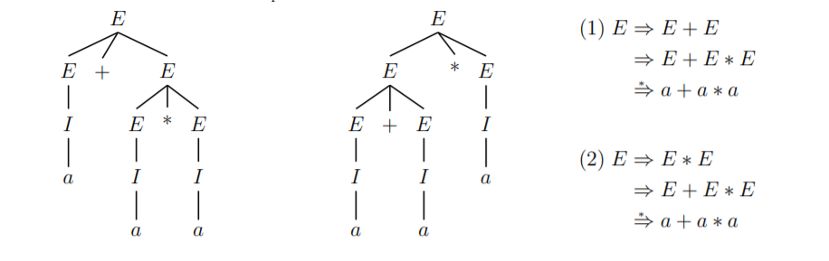

5. CFG
1. CFG
(1). 定义
上下文无关文法 $G$ 是一个四元组 $G=(V,T,P,S)$:
① $\small V$ : a finite set of variables
② $\small T$ : a finite set of terminals, and $\small V\cap T=\emptyset$
③ $\small P$ : a finite set of productions. Each production consists of:
$\small\mathsf{1^\circ}$ a variable defined by the production, called head.
$\small\mathsf{2^\circ}$ the production symbol "$\small\to$"
$\small\mathsf{3^\circ}$ a string $\small\in(V\cup T)^*$, called body
④ $\small S$ : $\small S\in V$, start symbol.
文法中 $\small A$ 的全体产生式称为 $\small A$ 产生式。
字符使用的一般约定：
- 终结符: $0,1,...\ ,a,b,...\ $
- 终结符串: $...\ ,w,x,y,z$
- 非终结符: $S,A,B,...$
- 终结符或非终结符: $...\ ,X,Y,Z$
- 终结符或非终结符组成的串: $\alpha,\beta,\gamma,...$
(2). 归约、派生
通过文法判别某个串 $w$ 是否在语言 $L$ 中，根据文法变元和字符串的分析顺序，可划分为归约 (reduction) 和 派生/推导 (derivation)。
定义: 若 $\small\mathrm{CFG}$ $\small G=(V,T,P,S)$，设 $\alpha,\beta,\gamma\in$ $\small (V\cup T)^*,\ A\in V,\ A\to\gamma\in P$，那么称 $\small G$ 中可由 $\alpha A\beta$ 派生出 $\alpha\gamma\beta$，记为 $\alpha A\beta\underset{G}{\Rightarrow}\alpha\gamma\beta$。相应的，称 $\alpha\beta\gamma$ 可归约为 $\alpha A\beta$。
$\alpha_1$ 经过 $i$ 步派生得到 $\alpha_m$: $\alpha_1\overset{i}{\underset{G}{\Rightarrow}}\alpha_m$，经过零或多步: $\alpha_1\overset{*}{\underset{G}{\Rightarrow}}\alpha_m$。
定义: 为限制派生的随意性，要求只替换符号串中最左边变元的派生过程称为最左派生，记为 $\underset{\mathrm{lm}}{\Rightarrow}$，相应的，最右派生记为 $\underset{\mathrm{rm}}{\Rightarrow}$。
定义: 对 $\small G=(V,T,P,S)$，若 $\alpha$ 由初始符号派生，即 $\alpha\in (V\cup T)^*$ 且 $S\overset{*}{\Rightarrow} \alpha$，则称 $\alpha$ 为 $\small G$ 的句型 (sentential forms)。通过最左/右派生得到的句型为左/右句型，只含有终结符的句型为 $\small G$ 的句子。
(3). 文法的语言
$\small\mathrm{CFG}$ $\small G=(V,T,P,S)$ 的语言定义为 $\small\mathbf{L}(G)=\lbrace w\ |\ w\in T^*,\ S\overset{*}{\underset{G}{\Rightarrow}}w\rbrace$。$\small L$ 被称为上下文无关语言。
e.g. design CFG:
① $L=\lbrace w\in\lbrace 0,1\rbrace^*\ |$ w contains at least three 1s$\rbrace$;
② $L=\lbrace 0^n1^m\ |\ n\ne m\rbrace$;
① $S\to A1A1A1A,\ A\to 0A\ |\ 1A\ |\ \varepsilon$
② $C\to 0C1\ |\ \varepsilon,\ S\to AC\ |\ CB,\ A\to A0\ |\ 0,\ B\to 1B\ |\ 1$
2. Parse Trees
字符串在规约或派生的过程中可以表示为树形结构，即语法分析树。
(1). 定义
定义 $\small\mathrm{CFG}$ $\small G=(V,T,P,S)$ 的语法分析树为：
① 内结点为 $\small V$ 中符号，叶结点为 $\small V\cup T\cup\lbrace\varepsilon\rbrace$ 中符号
② 如果某内结点 $\small A$ 的子结点从左到右依次为 $\small X_1,X_2,...\ ,X_n$，那么 $\small A\to X_1X_2...\ X_n\in P$。
若有 $\small X_i=\varepsilon$，则 $\varepsilon$ 是 $\small A$ 的唯一子结点，且有 $\small A\to\varepsilon\in P$。
定义 语法树的全部叶结点从左到右连接起来称为该树的产物或结果。如果树根为初始符号，叶结点均是终结符或 $\varepsilon$，则该产物属于 $\mathbf{L}(G)$。
定义 语法树中所有标记为 $\small A$ 的内结点及其全部子孙结点构成的子树称为 $\small A$ 子树。
(2). 语法分析树和派生的等价性
$\small\mathrm{CFG}$ $\small G=(V,T,P,S)$ 且 $\small A\in V$，那么 $A\overset{*}{\Rightarrow}\alpha$ 当且仅当 $\small G$ 中存在以 $\small A$ 为根、产物为 $\alpha$ 的语法树。并且，每棵语法分析树都有唯一的最左派生和最右派生。
3. 文法的歧义性
如果某个 $\small\mathrm{CFG}\ G$ 使得某些字符串有两棵不同的语法分析树，则称该文法是歧义的 (ambiguous)。
(1). 算术表达式的歧义性
文法 $\small G_{exp}: E\to I\ |\ E+E\ |\ E*E\ |\ (E)\ ,I\to a\ |\ b\ |\ Ia\ |\ Ib\ |\ I1\ |\ I0$ 就是有歧义的，
以产物 $a+a*a$ 为例：

文法 $\small G_{exp}$ 的歧义性来自于以下两个方面：
- 未考虑运算符的优先级；例如 推导 $\mathtt{(1)}$ 中 $*$ 的优先级更高 ($\small+$ 是 $*$ 父结点的兄弟)，推导的结果为 $a+(a*a)$
- 一系列同样运算符的结合顺序；以 $\small E+E+E$ 为例，因为加法满足结合律，结合的顺序无所谓，但必须选择一种。习惯的解决办法是坚持从左到右的结合顺序。
$\small(2).\ F\to I\ |\ (E)$$\small (4).\ E\to T\ |\ E+T$
在一棵语法分析树中，若在某个变元 $A$ 推导出的表达式左右添加某些符号，使 $A$ 推导出的表达式的优先级改变，我们称 $A$ 会被打断 (break)。
则 $\small G_{exp}'$ 从以下方面消除歧义性：
- 强制优先级：引入不同变元，每个变元拥有同样的 "binding strength"
- $\small F$ (factor): 不可被打断，推导出标识符和括起来的表达式
- $\small T$ (term): 可以被 $*$ 打断，推导出的串一定是用 $*$ 连接的 $\small F$
- $\small E$ (expression): 可以被 $*$ 和 $+$ 打断，推导出由 $+$ 连接的 $\small T$
- 从根开始构建语法树时，把表达式看作 $t_1+t_2+...$ 的形式，然后再递归的构建 $\small T$，强制了 $*$ 和 $\small+$ 之间的优先级
- 对于同级符号，以 $\small E=t_1+t_2+...+t_n$ 为例，$\small E$ 只可能被语法树拆分为 $t_1+...+t_{n-1}$ 和 $\small t_n$
(2). 语言的固有歧义性
如果一个上下文无关语言 $L$ 的所有文法都是歧义的，则它被称为固有歧义的 (inherent ambiguous)。
e.g. 对于 $L=\lbrace a^ib^jc^k\ |\ i=j\ \mathrm{or}\ j=k\rbrace$ 中任何形如 $w=a^nb^nc^n$ 的串，总会有两棵语法树。
例如，$\small S\to A\ |\ AC\ |\ B\ |\ aB,\ A\to\varepsilon\ |\ aAb,\ B\to\varepsilon\ |\ bBc$ 就是 $L$ 的一个文法，它是歧义的。
证明 $L$ 的固有歧义性是复杂的, 但本质在于, $w$ 一定可以由 $i=j$ 和 $j=k$ 两种方式生成。
语言的固有歧义性是不可判定的。